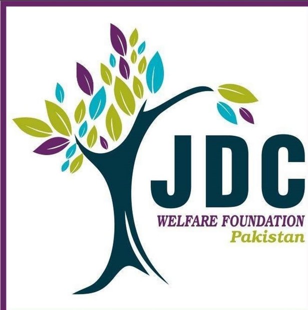

یہ بھی ایک فلاح بہبود ادارہ ہے۔ جے ڈی سی فاؤنڈیشن فلاح بہبود کے ہر کام میں شرکت کرتی ہے اور اس کا وجود 12 سال پہلے ہوا تھا یہ معیاری صحت کی ہاتھ کا حق لوگوں کو مفت میں کھانا مفت کی تعلیم اور شاگردوں کو مالی مدد فراہم کرتا ہے اور بیوہ کو بھی مالی مدد فراہم کرتا ہے اور یہ رنگ، کاسٹ، ریڈ کے اوپر کوئی فرق نہیں کرتے
انہوں نے پاکستان کے سب سے پہلے مفت تشخیصی لیب کی شروعات کی۔انہوں نے اس ضروری مسائل کو مدے نظر رکھتے ہوئے کہ زیادہ تر جو لیبس ہوتے ہیں وہ لوگوں سے خون کے ٹیسٹ کرنے کے لیے بہت پیسے لیتے ہیں یہ مدےنظر رکھتے ہوئے ایک فری لیب کا ابتدا کیا- اس کے علاوہ یہ اپنے لیب سے تھیلیسیمیا مریض کی مدد کر سکے اور ان کی خدمت میں 24/7 پیش رہے